图片来源
历史事件配图均来自 Wikimedia Commons，许可为公有领域（Public domain）、CC0 或知识共享（CC BY / CC BY-SA）等自由许可。页面中的图片经过裁切和压缩；点“Wikimedia Commons”可以查看原图、作者与完整许可说明。
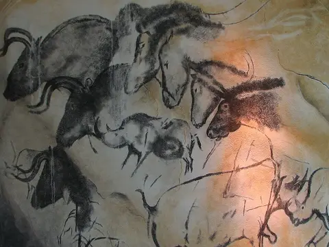
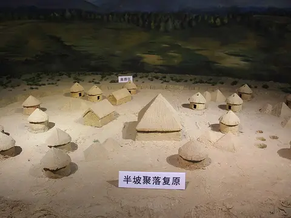
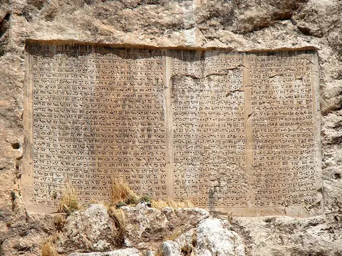
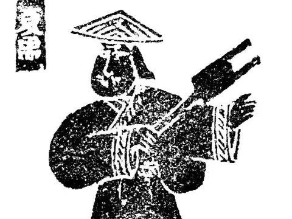
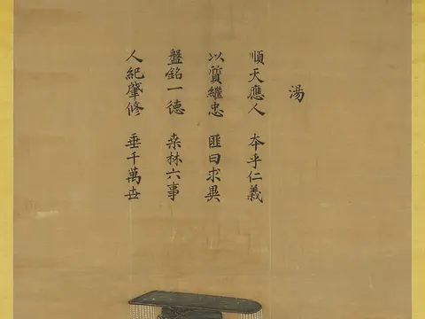
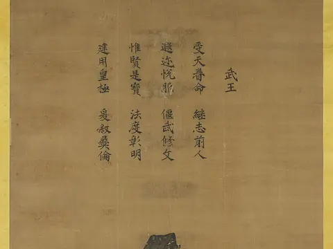
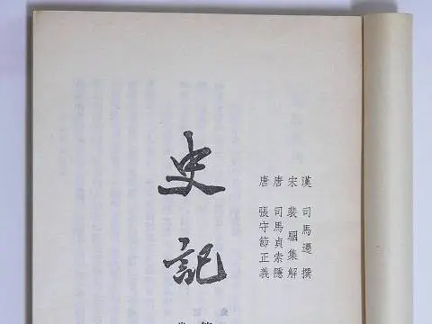
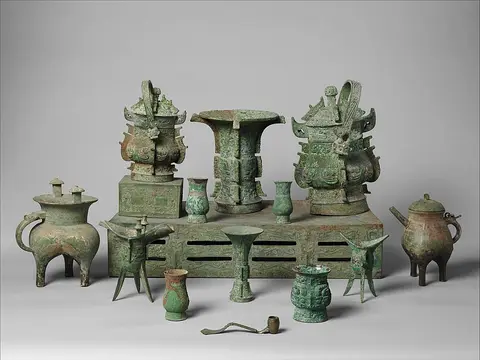
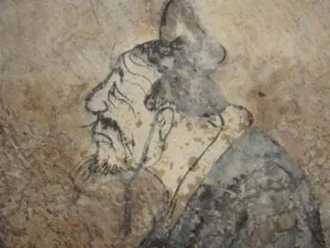
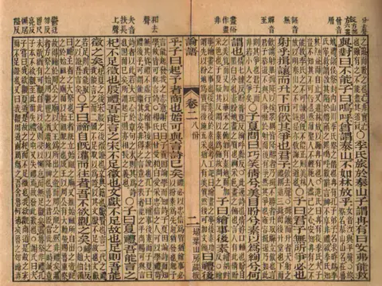
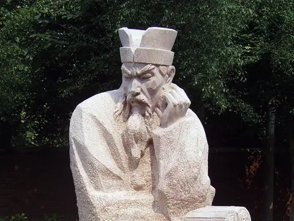
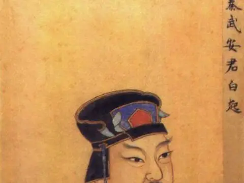
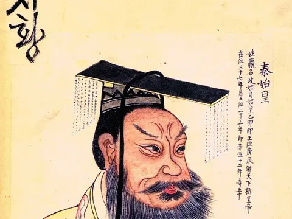
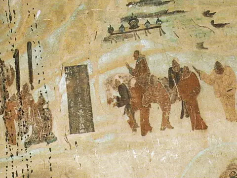
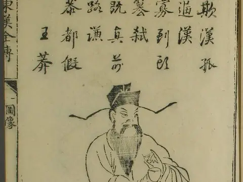
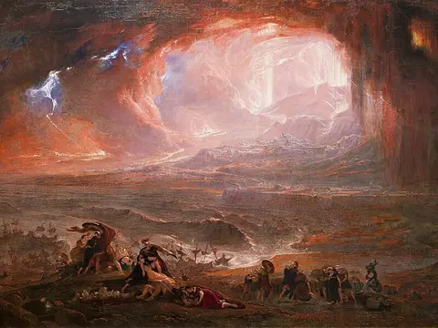
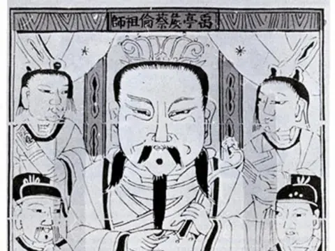
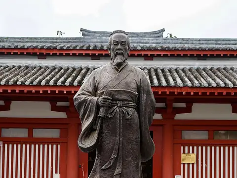
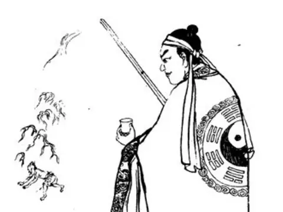
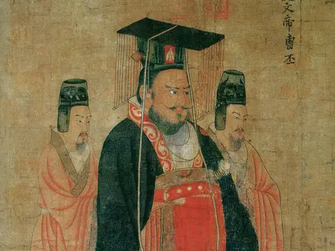
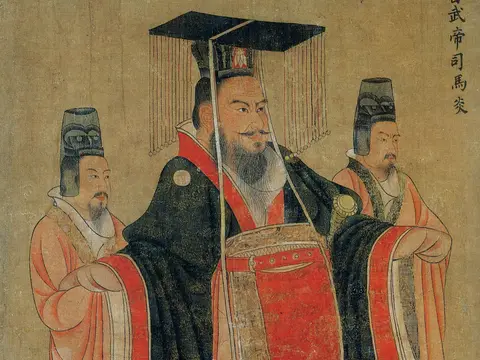
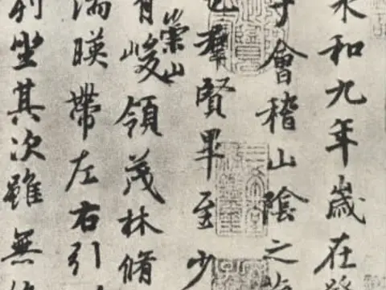
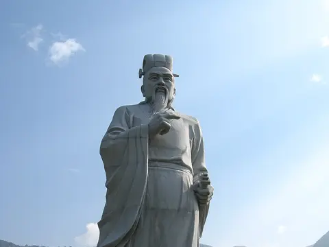
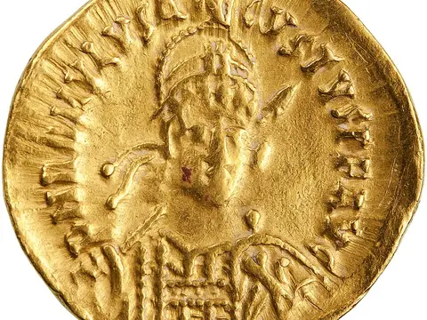
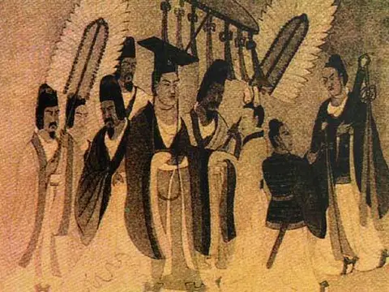
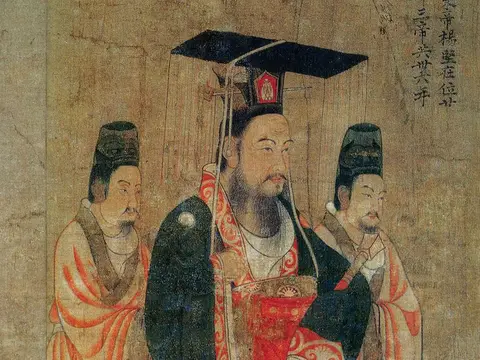
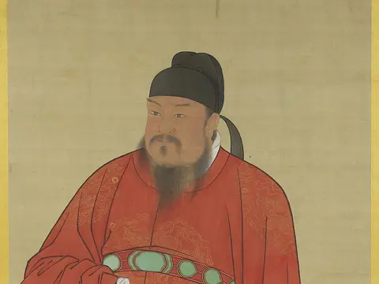
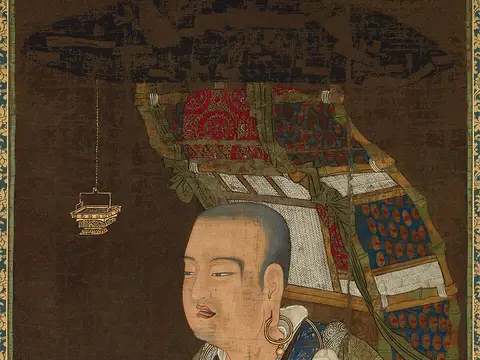
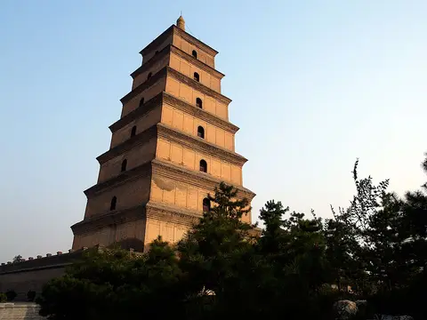
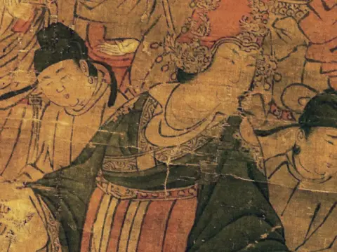
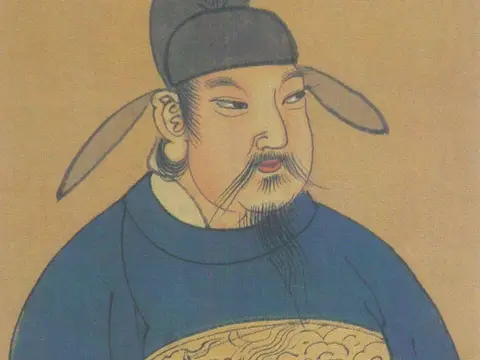
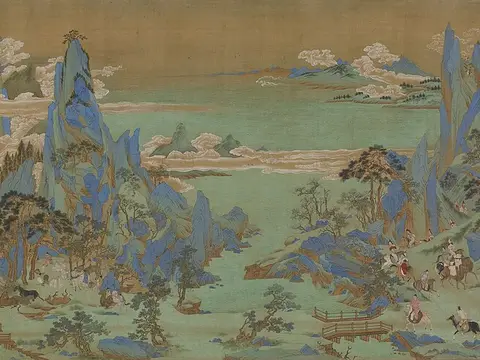
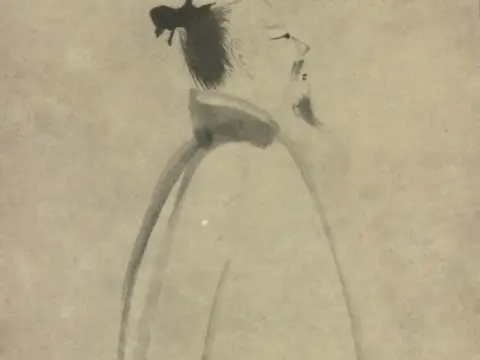
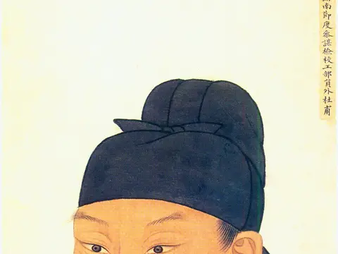
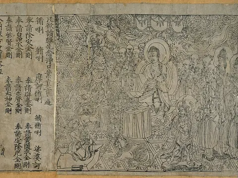
《金刚经》刻本868
The colophon, at the inner end, reads: Reverently [caused to · Public domain · Wikimedia Commons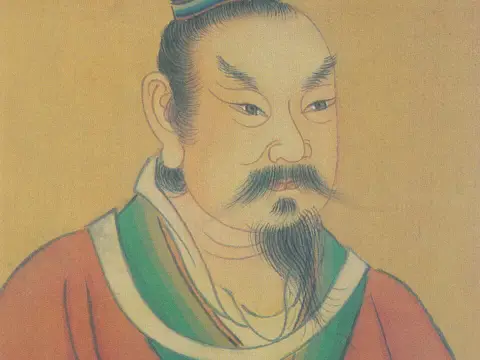
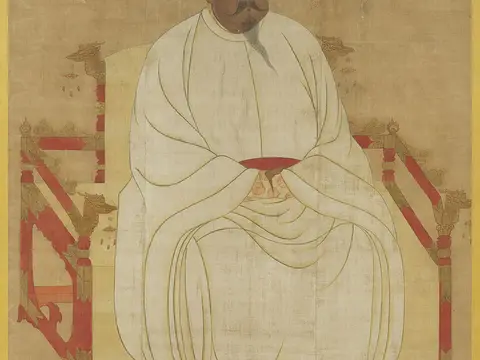
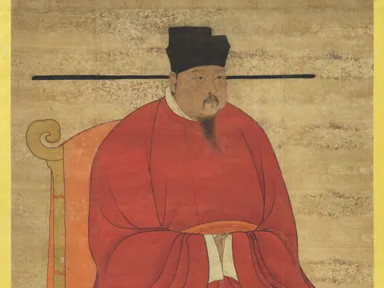
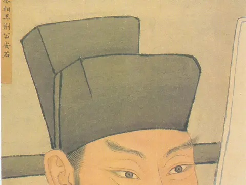
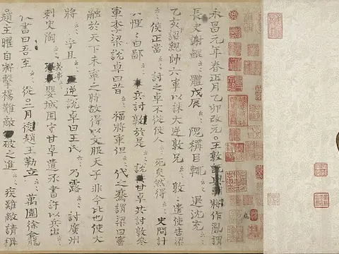
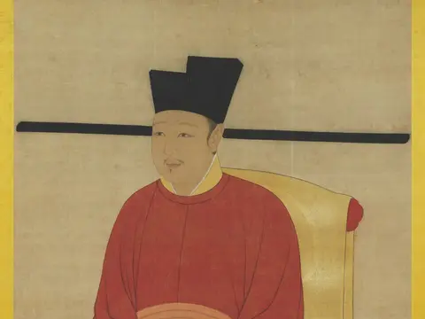
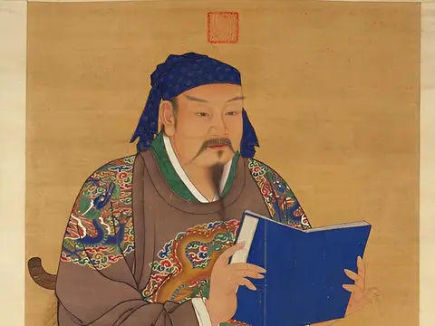
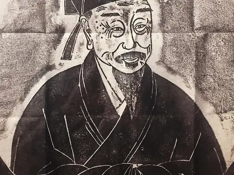
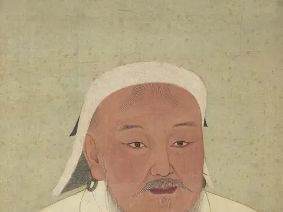
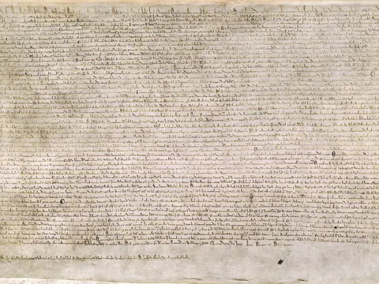
《大宪章》签署1215
Original authors were the barons and King John of England. U · Public domain · Wikimedia Commons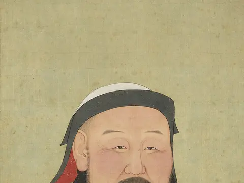
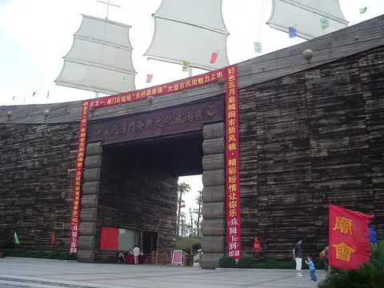
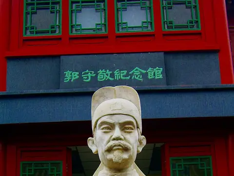
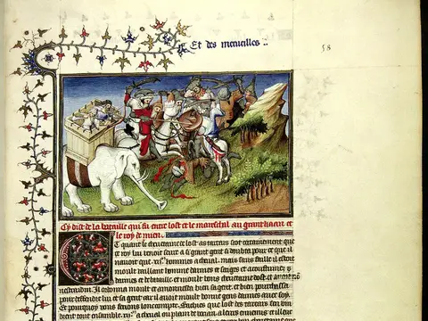
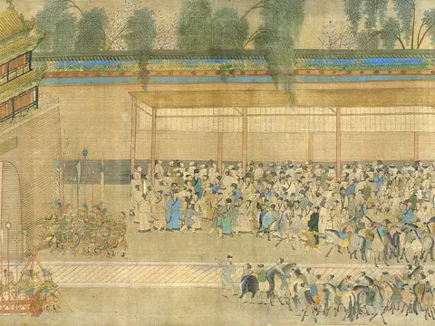
- 《天体运行论》出版1543
derivative work of Johannes Petreius 1543 edition of File:Ni · Public domain · Wikimedia Commons - 牛顿《原理》出版1687
The original uploader was Zhaladshar at English Wikisource. · Public domain · Wikimedia Commons - 美国《独立宣言》1776
original: w:Second Continental Congress; reproduction: Willi · Public domain · Wikimedia Commons - 《南京条约》1842
Painted by Captain John Platt, Bengal Volunteers. Engraved b · Public domain · Wikimedia Commons - 爱因斯坦奇迹年1905
Lucien Chavan [1] , a friend of Einstein's when he was livin · Public domain · Wikimedia Commons - DNA 双螺旋结构1953
84user adapting file originally uploaded by Richard Wheeler · CC BY-SA 3.0 · Wikimedia Commons